Pictures from an unforgettable trip into the Botswana wilderness,
with a land-based safari in the Moremi National Park and a
water-based safari in the Okavango Delta.
Incredible wildlife — sweeping landscapes — lifelong memories
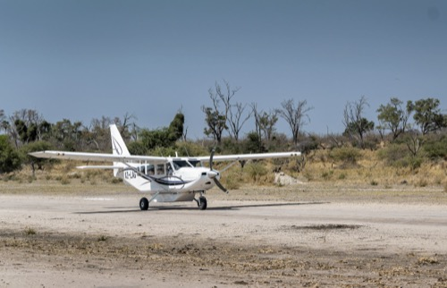
Air transportation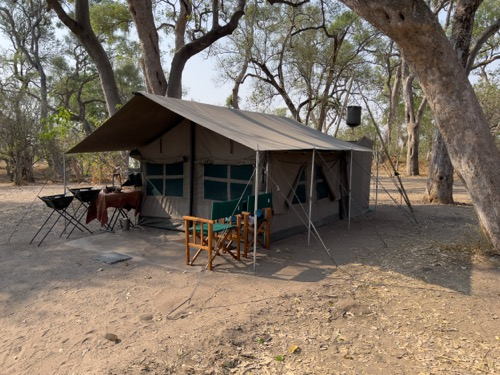
Camp site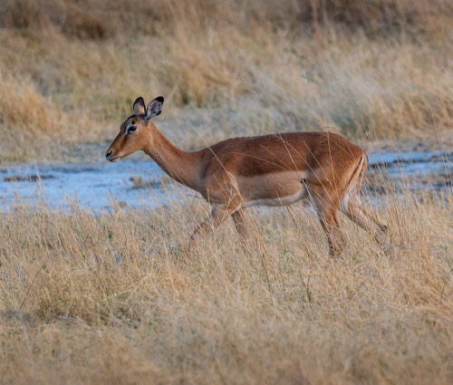
Impala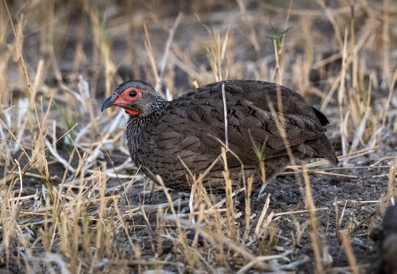
Swainson's spurfowl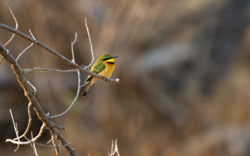
Little bee-eater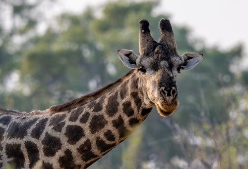
Giraffe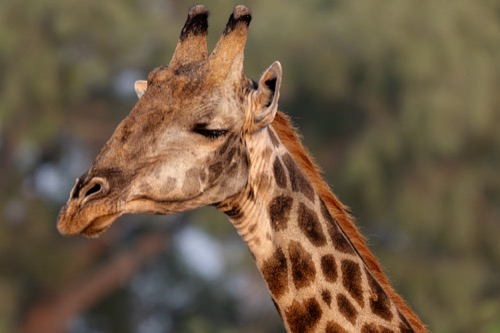
Giraffe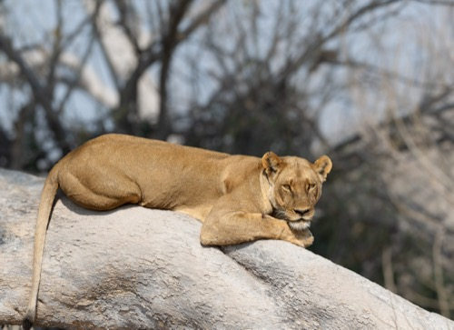
Lioness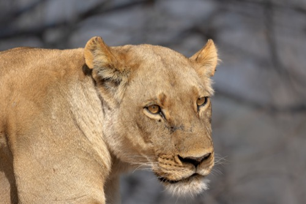
Lioness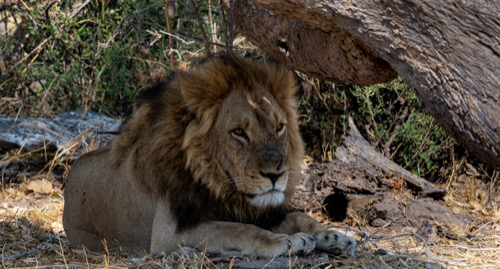
Lion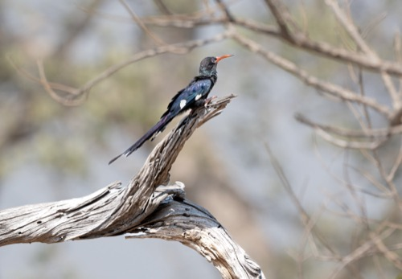
Violet wood hoopoe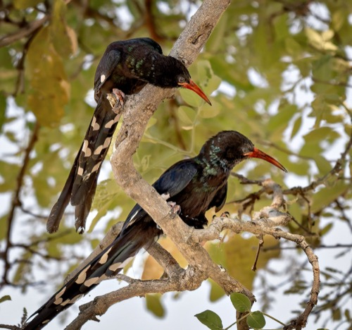
Violet wood hoopoes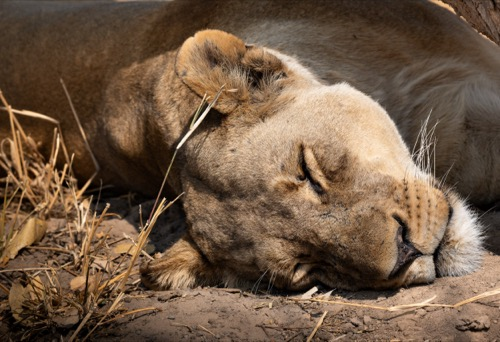
Lioness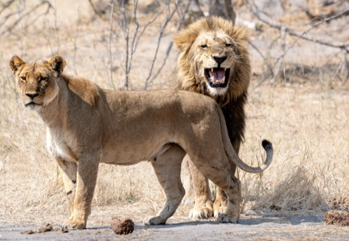
Lioness and lion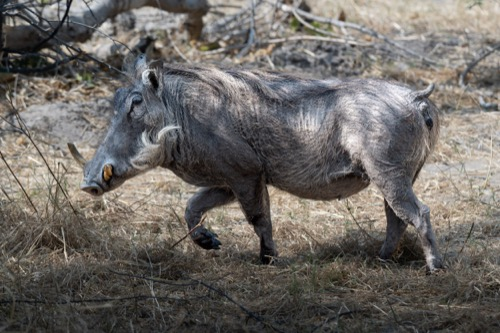
Warthog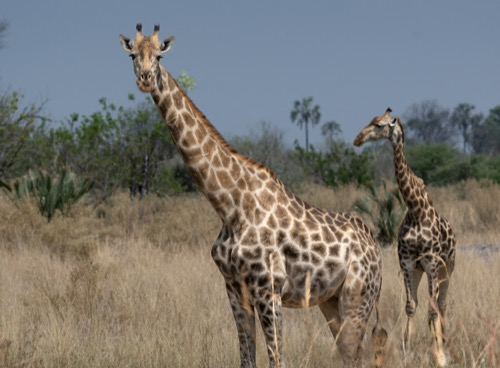
Giraffes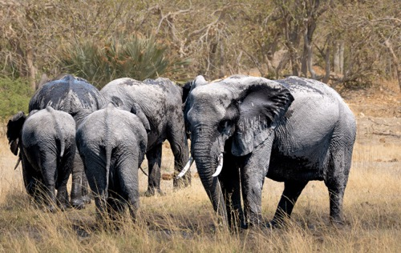
African elephants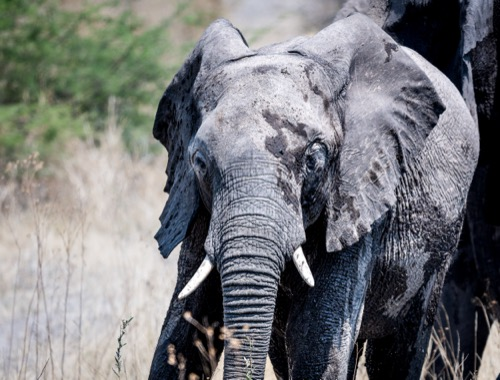
African elephant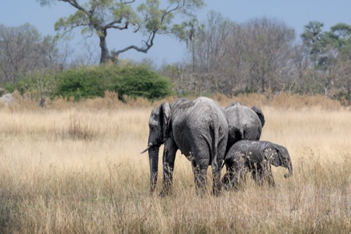
African elephants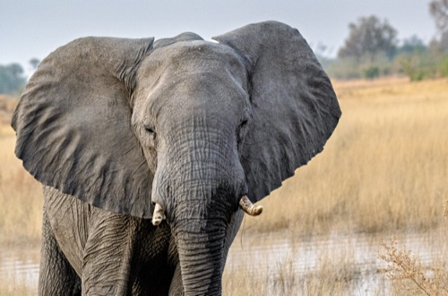
African elephant bull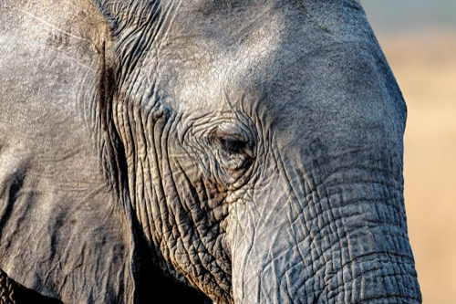
African elephant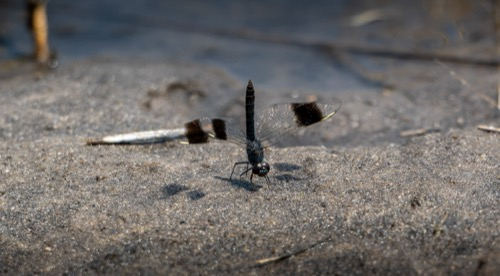
Southern banded groundling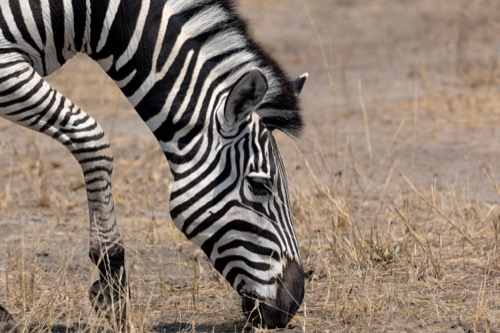
Zebra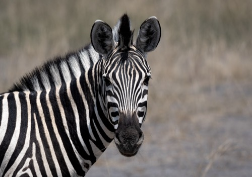
Zebra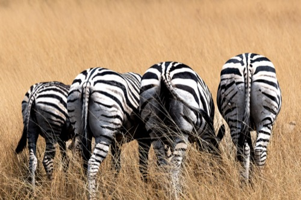
Zebra butts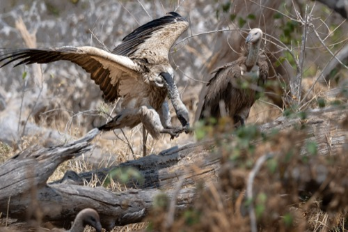
Whitebacked vultures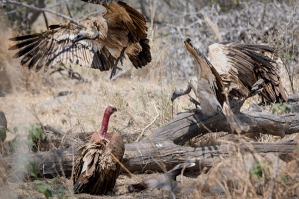
Whitebacked vultures (gorging on Kudu)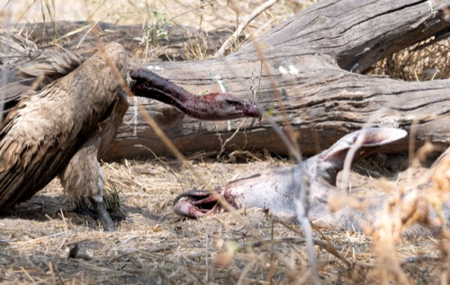
Whitebacked vultures (gorging on Kudu)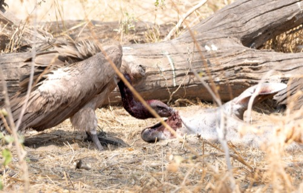
Whitebacked vultures (gorging on Kudu)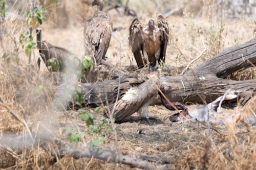
Whitebacked vultures (gorging on Kudu)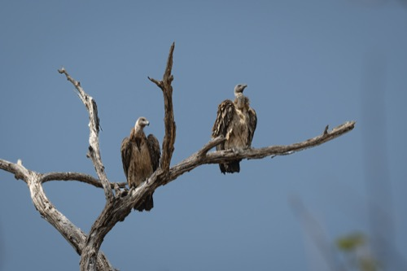
Whitebacked vultures (waiting their turn)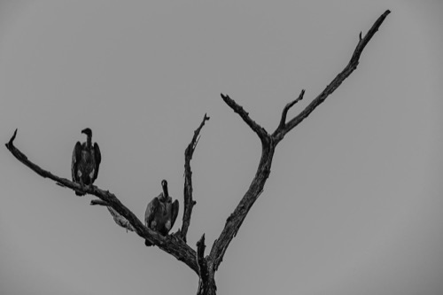
Whitebacked vultures (high-key)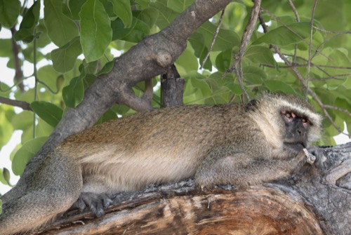
Vervet monkey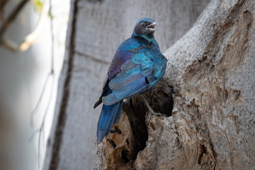
Cape starling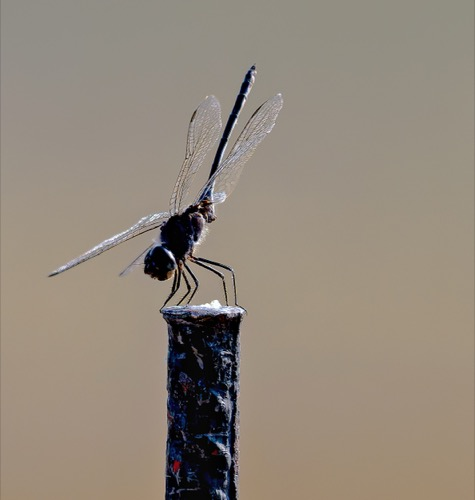
Dragonfly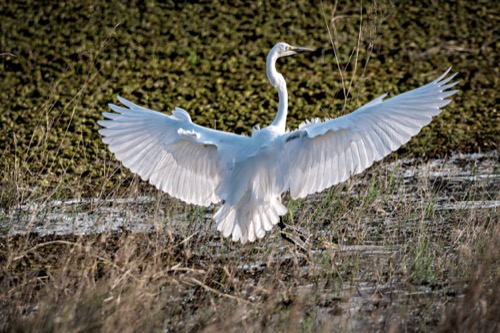
Great egret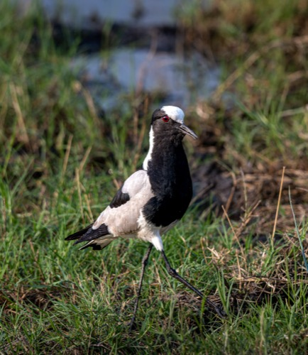
Blacksmith lapwing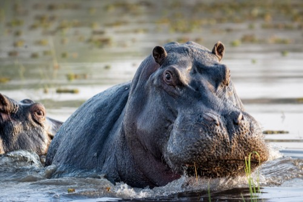
Hippopotamus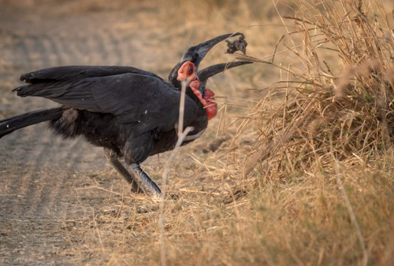
Southern ground hornbill (having a meal)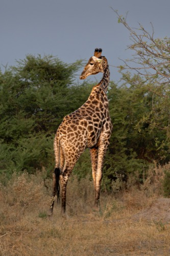
Giraffe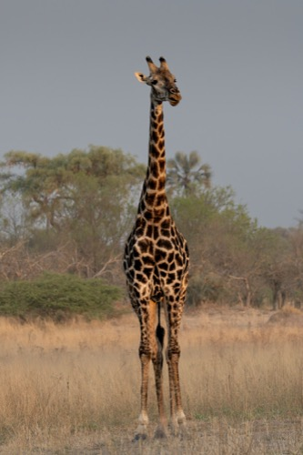
Giraffe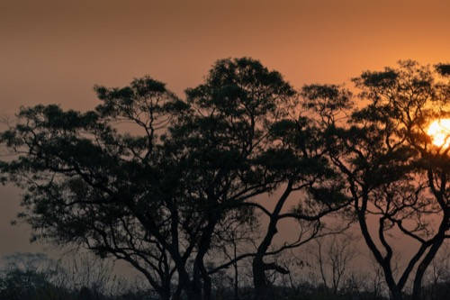
Sunset (Moremi)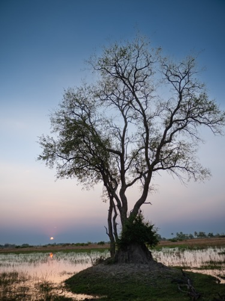
Okavango (Moremi)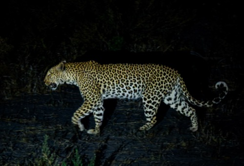
Leopard at night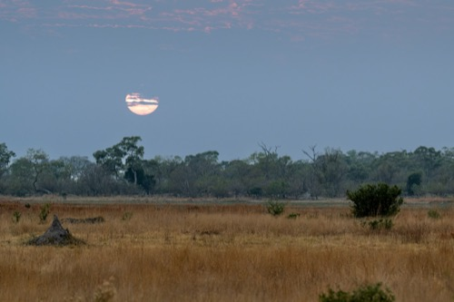
Sunrise (Moremi)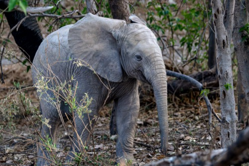
Baby elephant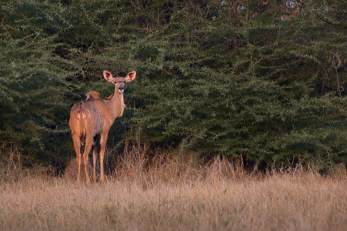
Kudu (female)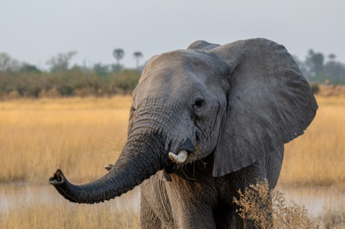
African elephant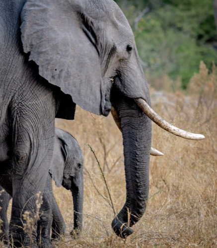
Mama elephant with baby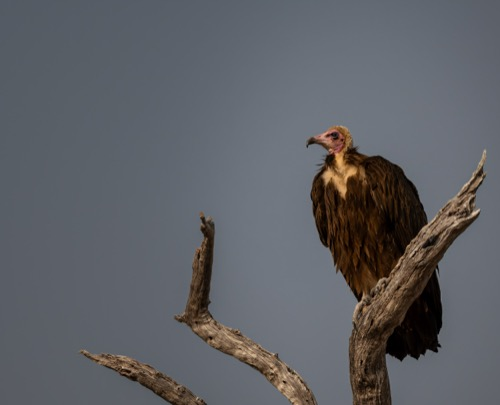
Hooded vulture